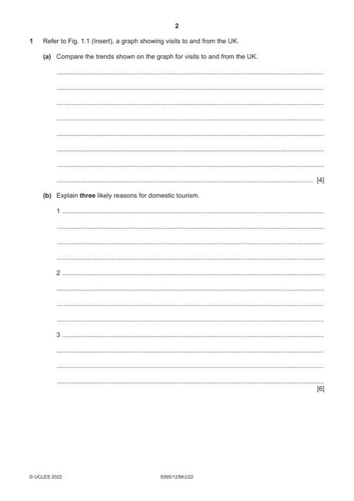

Question 1

Original paper page 2
Part 1(a) — solution
Compare the trends shown on the graph for visits to and from the UK. 4
Award up to four marks for comparing the trends.
Overseas visitor numbers fluctuate over the years (1) with three peaks
clearly seen (1) whereas the overseas rate stays relatively stable (1)
When the UK numbers peak it is summer and the overseas numbers do not
change as drastically (1)
When the UK rates drop it is winter and the overseas rates do not drop
significantly (1)
The numbers of UK tourists travelling overseas is consistently higher than
the overseas numbers coming to the UK (1)
Credit any other reasonable answer.
Mark points
- Include the ideas shown in the solution above.
Part 1(b) — solution
- The value of the local currency may have fallen (1) this will prevent
- There may be some form of problem in other countries such as terrorism
- VFR (1) may be going to a family event (1)
- There may be an important event on during the summer months (1) this
- Business travellers (1) may be going to a meeting/exhibition or
Mark points
- The value of the local currency may have fallen (1) this will prevent
- There may be some form of problem in other countries such as terrorism
- VFR (1) may be going to a family event (1)
- There may be an important event on during the summer months (1) this
- Business travellers (1) may be going to a meeting/exhibition or
Part 1(c) — solution
Explain the possible reasons why many tourists choose to visit 6
neighbouring countries.
Indicative content:
Neighbouring countries may have good infrastructure/health services.
It is easy to access in a variety of ways e.g. airlines/ferry/train
The language spoken may be the same
Exchange rates may be good for visitors at this time
Many may be working or conducting business in a neighbouring country
Other relevant information should also be credited.
Mark according to the levels of response criteria below.
Level 3 (5–6marks)
Candidates will show a clear understanding of the question and include a
detailed explanation as to why many tourists visit neighbouring countries.
Candidates effectively explain some reasons. There is sound and frequent
evidence of thorough, detailed and accurate knowledge and understanding
of concepts and principles using appropriate terminology.
Level 2 (3–4 marks)
Candidates will show an understanding of the question and include some
explanation of why many tourists visit neighbouring countries. The answer is
relevant and accurate and shows reasonable knowledge and understanding
of concepts and principles with some use of appropriate terminology.
Level 1 (1–2 marks)
Candidates identify/describe some possible reasons why many tourists visit
neighbouring countries. Information may be a list of points. The answer
lacks coherent organisation and there is little or no attempt to explain. The
answer is basic and shows limited knowledge and understanding of
concepts and principles with limited use of appropriate terminology.
Level 0 (0 marks)
No content worthy of reward
2022 Page 6 of 16
9395/12 Cambridge IGCSE – Mark Scheme May/June 2022
Mark points
- Include the ideas shown in the solution above.
Part 1(d) — solution
Discuss the economic factors that may cause a decline in tourist visits 9
to and from a country.
Indicative content:
Lack of employment in the visiting country which will restrict spending on
holidays.
Good rates of pay will allow more international travel so if the economic
situation is good then people will be paid more money or may have longer
paid holidays.
The exchange rates may not be good–the level of exchange abroad may be
high so it is not a good value destination.
However, if the currency is weak then fewer people may go to other
countries and will prefer to spend their holidays at home.
People may be working away from home and have to travel for their work.
Recession causes decreases in income so people may be unable to travel
as they may have pay cuts or may be laid off or on fewer hours.
Other relevant information should also be credited.
Mark according to the levels of response criteria below.
Level 3 (7–9 marks)
Candidates will show a clear understanding of the question and include
detailed identification and discussion of the economic factors that may
cause a decline in visits both to and from countries. Candidates effectively
discuss a range of factors and clearly attempt to weigh up the significance of
each. Analytical language will be used. There is sound and frequent
evidence of thorough, detailed and accurate knowledge and understanding
of concepts and principles using appropriate terminology.
Level 2 (4–6 marks)
Candidates will show an understanding of the question and include some
explanation of the economic factors that may cause a decline in visits both
to and from different countries. There may be some attempt to discuss and
some analytical language may be used. The answer is relevant and
accurate and shows reasonable knowledge and understanding of concepts
and principles with some use of appropriate terminology.
Level 1 (1–3 marks)
Candidates identify/describe some of the economic factors that may cause a
decline in visits both to and from different countries. Information may be a
list of points but explanations are incomplete and arguments partial (if
present). The explanations lack coherent organisation and there is no
attempt to discuss. The answer is basic and shows limited knowledge and
understanding of concepts and principles with limited use of appropriate
terminology.
Level 0 (0 marks)
No content worthy of reward
2022 Page 7 of 16
9395/12 Cambridge IGCSE – Mark Scheme May/June 2022
Mark points
- Include the ideas shown in the solution above.